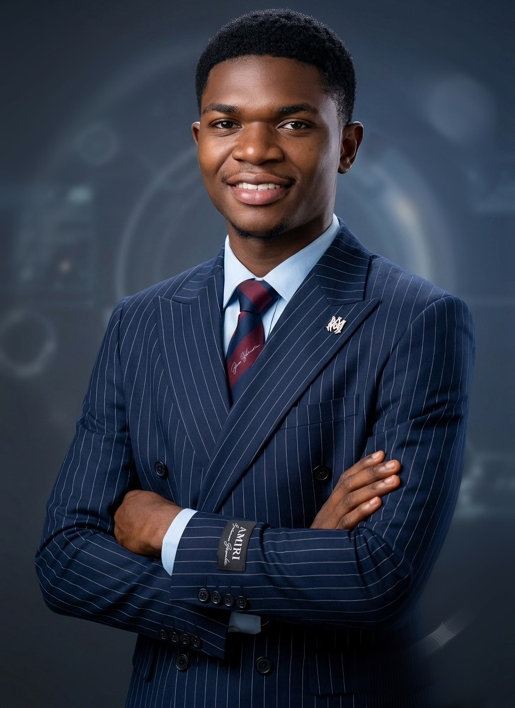

MON PARCOURS
Un chemin qui mêle passion du ballon rond et goût pour le code.
Je tape déjà dans le ballon depuis tout petit, mais c'est en CM2 que je prends ça au sérieux — je rejoins Promo Foot, l'équipe de mon quartier, avec des camarades de classe.
Entrée en classe de seconde, début du lycée.
Obtention de mon Bac II.
Une première année à l'université publique, encore un peu perdu dans mes choix d'orientation.
Je rejoins l'École Supérieure des Affaires (ESA) en Génie Logiciel — le vrai déclic pour l'informatique.
Avec des amis, on crée nos premiers formulaires et pages statiques. On bosse aussi sur des projets en salle, surtout en PHP.
Dernière année de Licence. Quelques rattrapages, un stage en cours, et une soutenance qui approche dans quelques mois.
Mettre toutes les chances de mon côté, foot et études, sans aucun regret. Le talent est là, la suite se construit.